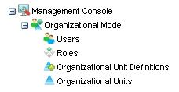

|
The following subsections describe each one of the components indicated in the above figure.
It indicates the name of the user currently logged into the system.
A set of actions that allow users to perform actions on the selected row/s of the grid.
It allows the user to log out from the application in order to log in with another user.
Through the Navigator, the user can select the applications of the GXflow client that he/she wants to work with.
The options shown in this tree depend on the profile of the user currently logged into the system. Basically, there are three user profiles:
- Normal user: this is the typical workflow system user. Each one of these users will normally have a group of roles assigned that will allow them to work with specific tasks of the workflow processes. They have the most restricted access level to the system and are not able to access any administration application.
- Process administrator user: in addition to the same rights as normal users, these users can access process administration applications. This implies that a user with this profile will be able to execute actions such as suspend or quit processes, assign tasks to users, etc.
- Administrator user: this is the profile with the highest access level and is aimed at system administrator users. These users will be able to access all GXflow client applications, which will allow them to execute actions such as creating new users, assigning/removing roles to/from users as well as setting up certain global options of the workflow system.
The assignment of profiles to users is performed in the Users application of the Administration Console.
The following table shows in detail the different options in the navigator:
| Menu |
Description |
|
Desktop
|
This application is available to all users and is where typical users work. In turn, it is made up of a group of applications that allow the user to view his/her list of pending tasks, execute a task, start new processes (if he has the corresponding rights), etc.
See Desktop for further details. |
|
Event Viewer
|
This application is available to users with process administrator or administrator profile. It allows the user to query information about the different events that took place in the system. These events are significant for the workflow system, such as the creation of a process, the creation of a task, the assignment of a task to a user, etc.
See Event Viewer for further details. |
|
Statistics
|
This application is available only to users who have administrator profile. It allows the user to view statistics about the Processes, Tasks, and Team performance.
See Statistics for further details. |
|
Dynamic Forms
|
This application is available only to users who have the GXflow Form Designer. It allows creating new form definitions, elements, and domains, as well as changing the existing ones. This feature is available as of GeneXus X Evolution 3.
See Dynamic Forms for further details. |
|
Backend
|
This application is available only to users who have GXflow Backend Administrator role. It allows creating new menus, components, and actions, as well as changing the existing ones. This feature is available as of GeneXus X Evolution 3.
See Backend for further details. |
|
Management Console

|
This application is available only to users who have administrator profile. It allows creating new users, assigning roles to users, setting up global options of the workflow system, etc.
See Management Console for further details. |
|
Settings
|
This group allows managing all the GXflow application general properties.
See Workflow Client Settings for a description of each one of the components of the Settings section. |
Paging buttons
A set of buttons that allow users to manage Grid paging.
It allows you to refresh the grid. When the grid is being refreshed the is displayed.
Under the section where the currently logged-in user is shown, the application the user is working on is also shown. This is the application currently selected in the Navigator.
In turn, each one of these applications is made up of a group of applications that are shown as tabs. The user will be able to access any of these applications, any time, by clicking on the corresponding tree item.
Most of the applications that make up GXflow client have very similar interfaces.
This section describes the common elements shared by these applications.
- Grid
- Search
- Multiple Process
- Paging Buttons
All applications that present information through a grid have a group of buttons that allow browsing the grid pages. These buttons are always shown at the bottom of the grid.
It allows you to move to the first page, the previous page, following page, the last page or type the number of the desired page.
|